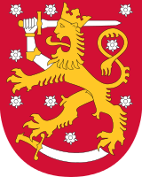

| generali | |
|---|---|
| stemma |  |
| forma di governo | Repubblica parlamentare |
| popolazione | |
| abitanti | 5 428 130 |
| densita(ab/km2) | 18 |
| geografia | |
| continente | europa |
| confini | norvegia, svezia, russia |
| fuso orario | UTC+2 |
La Finlandia fu abitata da gruppi di Lapponi e successivamente invasa da Finni (da cui il nome). Il 1154 segna l'inizio del dominio svedese, durato quasi 7 secoli e che cominciò con l'introduzione del Cristianesimo da parte del re svedese Eric. Lo svedese divenne la lingua dominante, benché il finlandese sia riuscito a riprendere il dominio durante il XIX secolo con le spinte nazionaliste finlandesi che sono seguite al racconto nazional-epico finlandese, il Kalevala. Nel 1809 la Finlandia venne conquistata dalle armate dello Zar Alessandro I, e rimase un granducato autonomo collegato all'Impero russo fino al 1917.
Il 6 dicembre 1917, poco dopo la rivoluzione d'Ottobre in Russia, la Finlandia dichiarò la propria indipendenza. Dopo un breve tentativo di stabilire una monarchia, nel 1918 il Paese fece l'esperienza di una breve ma sanguinosa guerra civile che avrebbe caratterizzato la politica locale per molti anni. Il 1919 vide la nascita dell'attuale repubblica finlandese.
Facente parte della regione biogeografica boreale, il territorio della Finlandia, collocato nella parte orientale della regione geografica chiamata Fennoscandia, è compreso fra i 60° e i 70° di latitudine; oltre un terzo del territorio è a nord del Circolo Polare Artico e ciò fa del paese uno degli stati più settentrionali al mondo. Esso si presenta come un vasto penepiano uniforme, interessato soltanto nelle regioni settentrionali dalla catena dei Monti Scandinavi, tanto che il suo punto più alto (1.324 metri) è l'Halti, una montagna situata all'estremo nord-ovest, sul confine con la Norvegia. La morfologia del territorio è conseguenza di intensi movimenti glaciali, che contribuirono in maniera determinante ad appianare e a smussare le asperità dei rilievi mediante l'apporto di detriti morenici.
All'epoca delle glaciazioni risale la formazione dei 187.888 laghi, considerando solo quelli di dimensioni importanti. Spesso collegati fra di loro e con numerose isole, questi laghi occupano circa un decimo del territorio finlandese e costituiscono l'immagine simbolo del paese. Essi non sono molto profondi ma hanno un contorno generalmente allungato, e si trovano in maggiore quantità nella cosiddetta regione dei laghi, nella parte sudorientale del paese, delimitata a meridione da una doppia cresta morenica alta 200 metri, il Salpausselkä.
La Finlandia ha circa 5.428.130 abitanti, con una densità di circa 16 abitanti per km². Questo fa di essa uno degli Stati europei più scarsamente popolati. La popolazione si è sempre concentrata nel sud del paese, fenomeno che si accentuò nel corso dell'urbanizzazione durante il XX secolo, per ragioni climatiche e di comunicazione con le altre nazioni.
La Finlandia detiene anche una delle più basse percentuali di immigrati: solo il 2,5% della popolazione[15][16]. Gli immigrati sono prevalentemente di origine europea, con maggioranze russe, estoni e svedesi. Il diritto di ius soli non è del tutto valido: se un bambino è nato in territorio finlandese e non ottiene la cittadinanza altrove, allora riceve la cittadinanza finlandese.